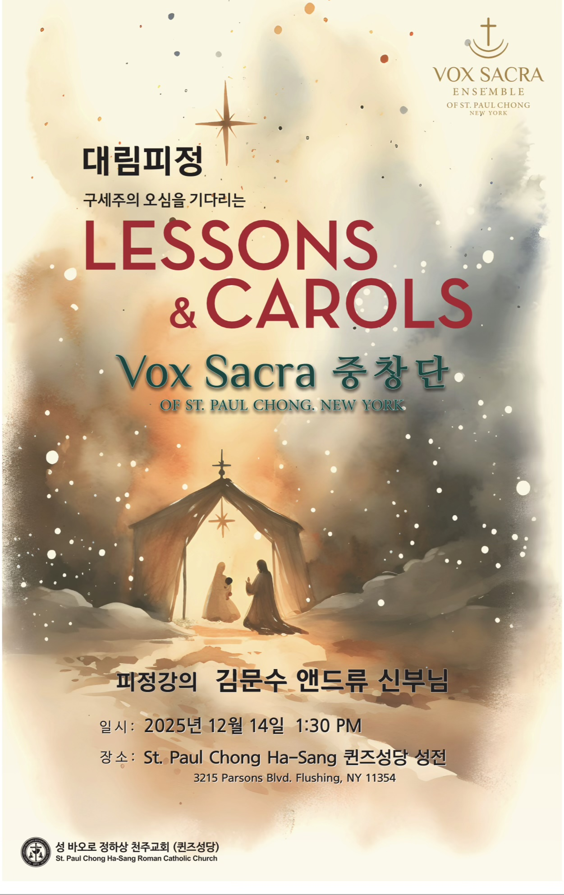
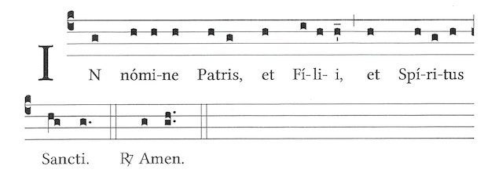
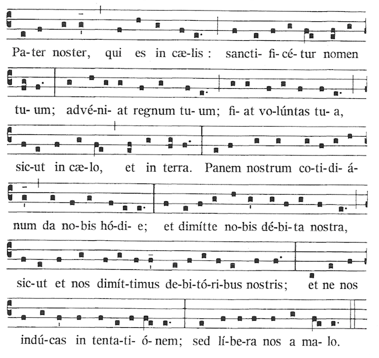
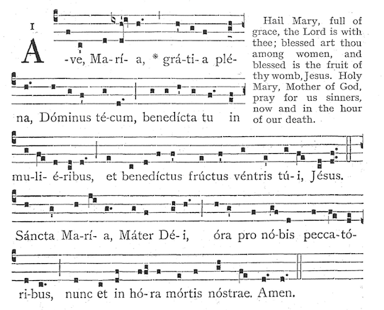
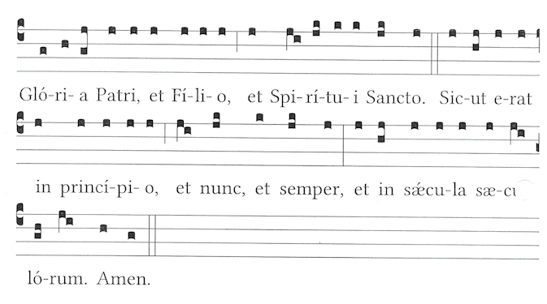

v2.5.0





Reading I – Genesis 3:8–15
The Fall and the First Promise of Redemption
15th Century French melody, arr. David Willcocks
Reading II – Genesis 22:15–18
God's Promise to Abraham
Latin hymn (9th Century)
Reading III – Isaiah 9:1–6
The People Who Walked in Darkness Have Seen a Great Light
14th Century German melody
Reading IV – Isaiah 11:1–9
The Peaceable Kingdom
H.J. Gauntlett, arr. David Willcocks
Reading V – Luke 1:26–38
The Annunciation
Jacques Arcadelt, 16th Century
Reading VI – Matthew 1:18–25
The Birth of Jesus Christ
Franz Gruber, arr. John Rutter
Reading VII – Luke 2:8–20
The Birth of Jesus Announced to Shepherds
Felix Mendelssohn, arr. David Willcocks
Reading VIII – Matthew 2:1–12
The Visit of the Magi
Old German carol, arr. R. L. Pearsall
Reading IX – John 1:1–14
The Word Became Flesh
John Francis Wade, arr. David Willcocks
Traditional English carol
We'd love to hear your thoughts about this service.
Provide Feedback